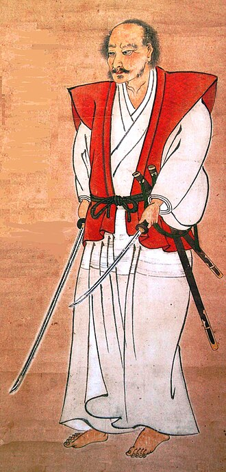

Міямото Мусаші
Немає нічого поза тобою, що могло б коли-небудь Зміст:Біографія: Шлях становлення Міямото Мусаші (приблизно 1584 – 1645) — легендарний японський ронін, майстер меча, стратег та філософ, чиє життя стало втіленням Шляху воїна. Народився в провінції Харіма, він з ранніх років вивчав бойові мистецтва під керівництвом свого батька, Сінмена Мунісая, який також був вправним фехтувальником. Мусаші провів свій перший переможний поєдинок у віці всього 13 років, поклавши початок своїй непереможній серії. Після битви при Секіґахарі в 1600 році, де він, імовірно, бився на боці переможених, Мусаші стає роніном — самураєм без пана. Він вирушає у "Муся сюгьо" — довгу мандрівку-паломництво воїна по Японії з метою вдосконалення своєї майстерності через поєдинки з найкращими бійцями країни. За його власними записами, до 29 років він провів понад шістдесят поєдинків і не програв жодного, здобувши славу одного з найнебезпечніших фехтувальників свого часу. Легендарний поєдинок на острові Ганрю Найбільш знаковий бій у житті Мусаші відбувся 13 квітня 1612 року проти Сасакі Коджіро, майстра, що славився своїм довгим мечем нодаті та смертоносною технікою "Цубаме Ґаеші" (Політ ластівки). Поєдинок було призначено на острові Фунашіма. Мусаші, відомий своїми психологічними тактиками, навмисно запізнився на кілька годин. Це розлютило Коджіро та його прихильників, змусивши його втратити емоційну рівновагу. Замість традиційних двох мечів, Мусаші вийшов на бій з дерев'яним боккеном, який, за легендою, він витесав зі старого весла по дорозі на острів. Довжина цього імпровізованого меча перевищувала довжину нодаті Коджіро. Коли розгніваний Коджіро кинувся в атаку, Мусаші одним точним і смертельним ударом по голові завершив поєдинок. Ця перемога стала апогеєм його слави як непереможного стратега. Філософія та "Доккодо"На схилі літ Мусаші перетворився з безжального бійця на мудрого філософа та митця. За тиждень до смерті він написав "Доккодо" ("Шлях, яким ідуть самотньо") — звід з 21 життєвого принципу для своїх учнів. Цей короткий, але глибокий текст відображає його суворе, аскетичне світосприйняття, засноване на ідеях дзен-буддизму та самодисципліни.
"Книга П'яти Кілець": Стратегія як мистецтвоУсамітнившись у печері Рейгандо, Мусаші систематизував свій величезний досвід у трактаті "Ґо Рін но Сьо" ("Книга П'яти Кілець"). Це не просто посібник з фехтування, а глибока праця про стратегію, яка може бути застосована у будь-якій сфері життя. Книга складається з п'яти сувоїв: Сувій Землі: Основи стратегії, важливість знання місцевості та планування. Сувій Води: Гнучкість та адаптивність. Техніка бою має бути такою ж мінливою, як вода. Сувій Вогню: Тактика ведення бою, агресія, ініціатива та психологічний тиск на ворога. Сувій Вітру: Аналіз та розуміння інших шкіл і стилів, щоб знати їхні сильні та слабкі сторони. Сувій Порожнечі: Стан просвітлення, коли розум вільний від думок і діє інтуїтивно, спонтанно. Ключові терміни
Спадщина
ДодатковоПереглянути Галерею зображень |